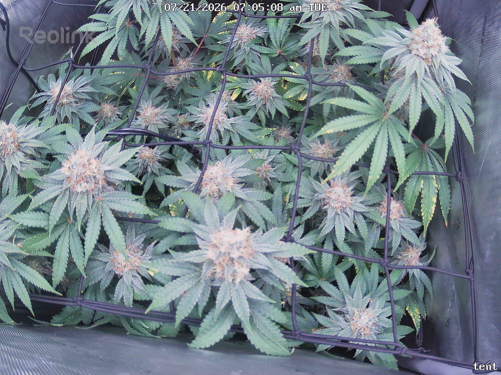
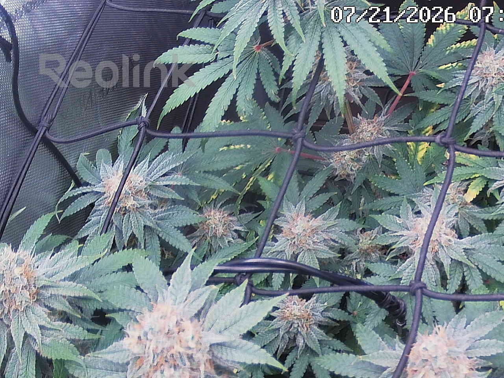
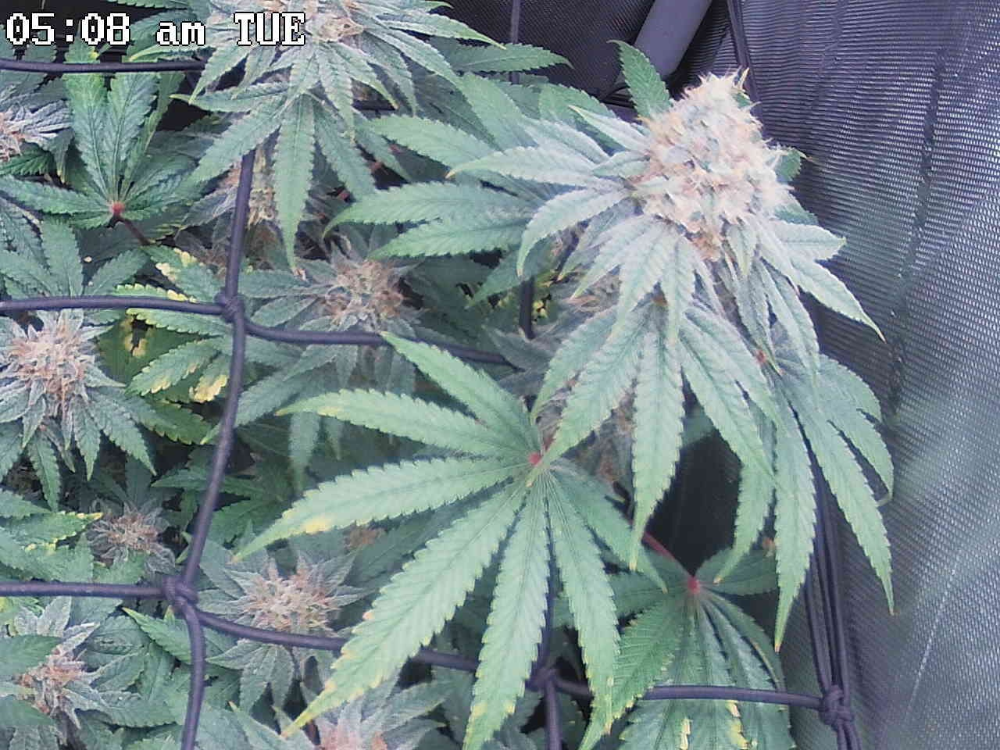
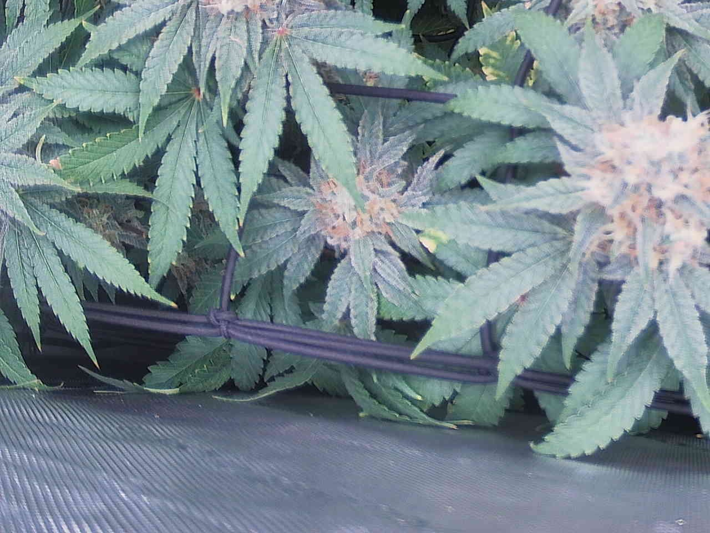
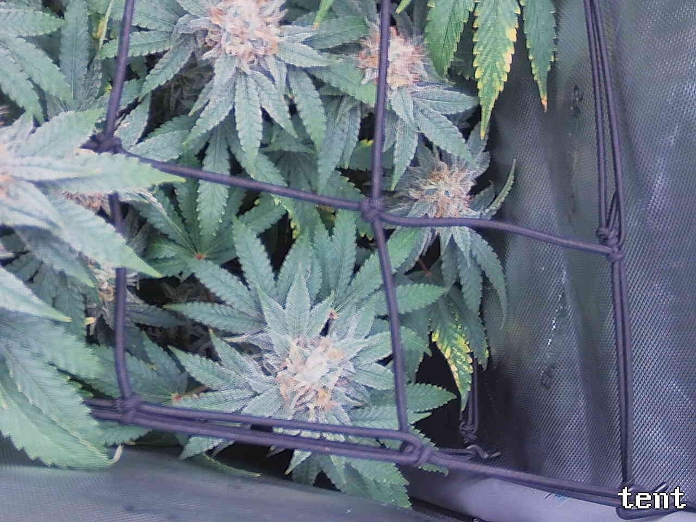

Per-quadrant analysis — the canopy shot was split into a 2x2 grid and each region compared against the previous day.
Overall, the plant is healthy and on-track for late flower (day ~48): all four quadrants report OK status, with pistils across every cola advancing toward cream/amber and bottom-right showing visibly fuller, frostier bulking versus 7/20 — no pests, webbing, powdery mildew, gray fuzz, droop, or new chlorosis anywhere in the canopy. The only recurring issue is the same interior/lower fan-leaf yellowing (with rust-tipped discoloration in bottom-right) tracked since 7/01–7/19 across all four tiles; it remains confined to old, shaded leaves, is not spreading to tops or new growth, and continues to correlate with pistil ripening — consistent with the KB's normal bottom-up senescence profile, not a new problem. No quadrant is marked ATTENTION this cycle. No action needed beyond continuing to monitor trichome/pistil ripeness toward harvest timing.
Bud sites (whole plant, estimate): 15-22
Bud sites: 3-5
Bud sites: 2-3
Bud sites: 3-5